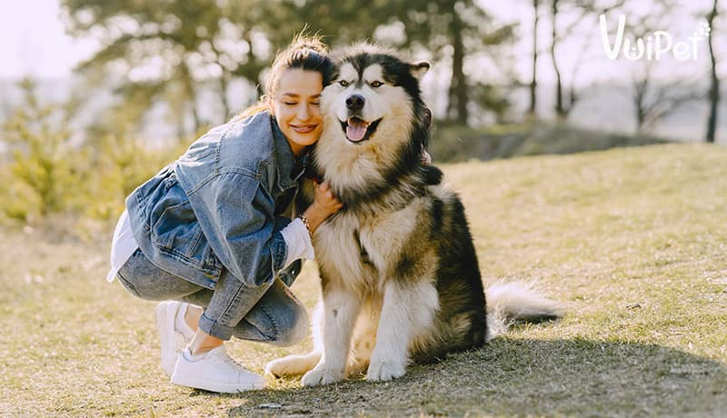
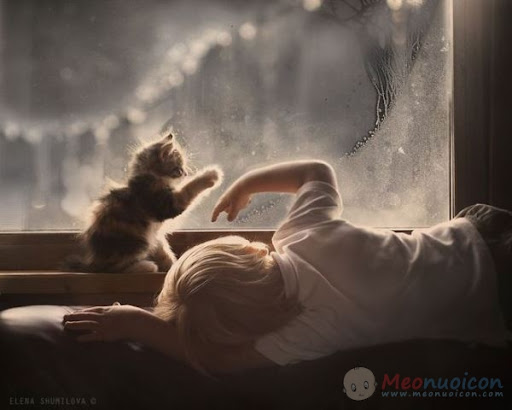
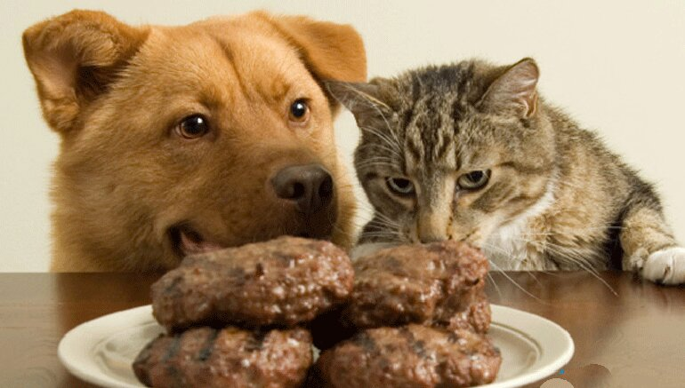

Nuôi thú cưng không chỉ là sở thích của nhiều người mà còn đang trở thành một ngành kinh doanh có lợi, những dịch vụ
đang trở nên sôi động. Vì những lợi ích mà thú cưng đem lại và nhu cầu chăm sóc thú cưng khi bạn quyết định nuôi chúng
với những dịch vụ uy tín, chất lượng và tận tâm. Dưới đây là nhứng nét giới thiệu
sơ qua về thú cưng và một số dịch vụ.
Một nghiên cứu được thực hiện bởi AAHA ( Hiệp hội Bệnh viện Động vật Hoa Kỳ) cho thấy hơn 90% chủ sở hữu vật
nuôi tin răng nuôi thú cưng ảnh hưởng tích cực đến sức khỏe thể chất và tinh thần. Việc dành thời gian
bên thú cưng sẽ làm cải thiện tâm trạng cũng như sức khỏe con người. Đặc biệt trong thời gian làm việc tại nhà hay không thể ra ngoài giao lưu chia sẻ trong tình hình dich bệnh Covid-19,
những “ người hùng” thực sự giúp những ngày tháng có phần buồn tẻ trở nên đầy màu sắc.
Nhu cầu nuôi thú cưng ngày càng phổ biến ở khắp nơi kể cả Việt nam, bởi việc nuôi thú cưng không chỉ còn là sở thích, thú cưng còn trở thành những người bạn sẻ chia và
cân bằng cuộc sống hiện đại của con người ngày nay.
1. Thú cưng là gì
Thú cưng là những loài động việc được chọn làm vật nuôi chăm sóc, làm bạn đồng hành sẻ chia trong cuộc sống. Những vật nuôi chọn làm thú cưng sẽ được nâng niu, chăm sóc như những người bạn, những đứa con tinh thần trong gia đình,
thâm chí còn được ôm ấp, ngủ cùng gia chủ.

Không chỉ có chó mèo mà còn rất nhiều loại thú cưng khác tùy thuộc và sở thích mỗi người như chuột Hamster, cá cảnh, chim…
và chúng cũng trờ thành người đồng hành trong cuộc sống và làm cuộc sống của bạn đầy thú vị.
2.Tác dụng mà thú cưng mang lại
Việc nuôi thú cưng có thực sự giúp chúng ta cải thiện cuộc sống? Hay chỉ là “vô bổ” tốn thời gian, công sức, tiền bạc?
Để giải đáp thắc mắc này. Chúng tôi xin đưa ra một số ý kiến
giúp bạn có một cái nhìn tổng quan về thú cưng:
a. Giúp giảm căng thẳng.
Sau những giờ làm việc
căng thẳng,
những cảm xúc tiêu cực, buồn tẻ thì thú cưng trở thành những người bạn chia sẻ, giúp giảm căng thẳng
hiệu quả bởi sự tinh nghịch, phá phách, leo trèo của chúng. Chúng luôn biết cách bày
trò để lấy được sự chú ý, tập trung của chủ nhân vào chúng để được bạn quan tâm chia sẻ.
Khi vui chơi cùng thú cưng t
hì hoocmon oxytocin hạnh phúc được tiết ra và chi phối não bạn làm giảm huyết áp
trong máu và cortisol. Từ đó giúp bạn giảm căng thẳng, stress và lấy lại tinh thần tốt hơn
b. Giúp giảm đi sự cô đơn.
Cảm xúc,
tâm trạng mỗi người đôi khi không phải đều có thể chia sẻ với ai. Khi đó một “ người lắng nghe” thực sự là cần thiết. Vì vậy thú cưng chính là nơi để b
ạn chia sẻ cảm xúc và biết lắng nghe. Hơn thế nữa, một số loài vật nuôi có thể biểu hiện cảm xúc của mình khi biết chủ vui hay buồn.Chúng
vô cùng nhạy cảm và nhận diện cảm xúc chủ nhân. Bạn có thể chia sẻ mà không sợ bị cười chê hay sợ bị ghét. Chúng luôn đồng hành cùng bạn để bạn không còn cô đơn.
Nguồn:Internet.
Đặc biệt các bạn còn đang FA hãy sẵm cho mình một chiếc "thú cưng" để ôm ấp vượt qua mùa đông lạnh lẽo này.
c. Cải thiện sức khỏe thể chất và tinh thần.
Những “ chiếc thú cưng” đều muốn bạn cùng với chơi với chúng. Để vui chơi cùng chúng thì đòi hỏi bạn phải dành nhiều thời gian để vận động cùng, khi đó sức khỏe sẽ được cải thiệ đáng kể. Thay vì ngồi một chỗ dành
nhiều thời gian lên mạng xã hội hay chơi game thì chúng ta có thể chơi đùa cùng thú cưng. Khi chơi đùa cùng chúng bạn có thể đót cháy calo, giảm thiểu nguy cơ một số các bệnh do ít vận động như:teo cơ, béo phì, tim mạch...

Nguồn:Internet.
d. Biết quan tâm và sống có trách nhiệm.
Đúngvậy, khi nuôi thú cưng thì chúng ta như nuôi thêm một người. Dành thời gian để chăm sóc đảm bảo chúng luôn khỏe mạnh như đáp ứng nhu cầu ăn uống, ngủ nghỉ và
phát triển toàn diện nhất.

Nguồn:Internet.
e. Bảo vệ và giúp đỡ chủ nhân.
Với một số loài thú cưng
đặc biệt như chó, mèo thì chúng có khả năng bảo vệ chủ nhân khi gặp nguy hiểm, giúp bạn an toàn hơn. Có thể nói thú cưng còn là “ bảo mẫu” với trẻ nhỏ giúp phụ huynh vui chơi chăm sóc em bé. Chúng được huấn luyện sẽ vui vẻ hòa đồng, vui chơi cùng trẻ em, bảo vệ chúng trước nguy hiểm. Hơn nữa,
chúng có thể là “ người để chúng ta sai vặt” khi được huấn luyện tỉ mỉ.

.jpg)